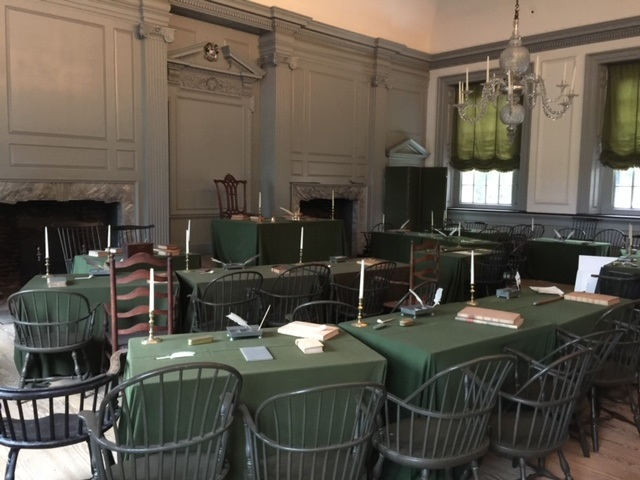

A few years ago one of my best friends decided to have his bachelor party in Costa Rica. I was lucky enough to be invited and I've included some of the fun moments we had on this trip while exploring this beautiful country. I was amazed by the hospitality of the natives and aslo the beautiful lush forests and beaches. I would highly recommend a trip to anyone who is interested to going to Costa Rica to make a vacation plan as soon as possible.
Another great landmark to visit while in Philadelphia is the Rocky Statue. There is a line to wait to have your picture taken in front of the statue but well worth the wait for this piece of American cinema. To the left and behind my photo is the legendary steps that Rocky Balboa ran up in the Rocky movies. You'll find many tourists taking pictures and videos running up the steps.

Fun Fact: Philadelphia is home to America's first zoo.
Independence Hall is where the United States Declaration of Independence and the United States Constitution were both debated and adopted. This is an iconic place to visit and the wait isn't too long. You're escorted inside the building with a group and walk through the building where much has been kept intact. This is a very historical view and well worth the price of admission.
I was fortunate enough to visit Philadephia for the first time on the Fourth of July. This made my trip and all the iconic sites full of history and vibrance. A long with all the history I would recommend to try a Philly Cheesesteak as pictured above. This city holds a lot of American History and should be a trip every American should take at least once.
Below I've listed a travel blog for Philadephia and three attractions with links that offer more detailed information about each attraction to visit.
Best Things to Do in Phliadelphia
| Top Attractions in Costa Rica | Websites |
|---|---|
| Liberty Bell Center | Liberty Bell Center |
| Independence Hall | Independence Hall |
| Philadephia Museum of Art | Philadephia Museum of Art |
Posted by: Juan Vega
Contact information: Juan.Vega1080@Gmail.com.